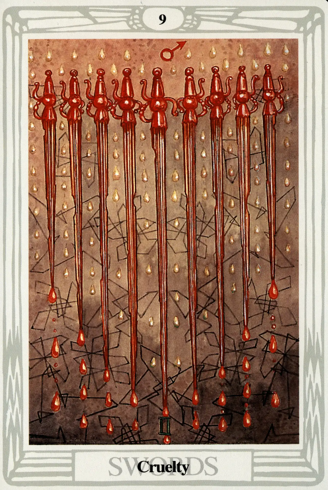

Swords
Nine of Swords
Cruelty

(Mars in Gemini)
10° to 20° Gemini
June 1 to June 10
Original Title: Lord of Despair and Cruelty.
Golden Dawn Model: From out of clouds on the left and right, four hands appear, each holding two swords nearly upright but with the points falling away from each other. From the bottom of the card, a fifth hand appears holding a ninth sword upright in the center, as if it had struck them apart. No rose at all is shown, seemingly having been utterly destroyed.
Prince Scale for Yesod: Very dark Purple.
The Four Scales for Mars: Scarlet; Red; Venetian Red; Bright Red, rayed Azure or Emerald.
The Four Scales for Gemini: Orange; Pale Mauve; New Yellow leather; Reddish Grey inclined to Mauve.
Formula: 9 (Yesod) of Swords (Yetzirah) + Mars in Gemini = CRUELTY
Oh, dear! Nobody expects the Spanish Inquisition! If you have a hangover, don't look at the Nine of Swords. You won't be ready to deal with this one. Who knows what Harris was doing with the colors, but she succeeded in making them perfectly nauseating. As if to underscore the degeneration of the suit, the pinwheel wings are being washed down the wall of the background by what look like drops of poison. The whole scene induces dizziness. I can almost taste the drops of rusty blood dripping from the swords.
It is kind of a surprise to find this horrible mess in middle-pillar Yesod. After all, the other nines are perfectly lovely fellows. But even the balance and stability of Yesod can't come to the rescue of all-action Mars—in all-talk Gemini—in the lowest burned-out region of Yetzirah, the world of thought. Watch out! It is, Crowley warns, “agony of mind.”
The only outlet for expression for this card is just ugly meanness. There is not even enough subtlety of mind left, Crowley points out, to take sadistic pleasure from its own cruelty: “Consciousness has fallen into a realm unenlightened by reason. This is the world of the unconscious primitive instincts, of the psychopath, of the fanatic.”